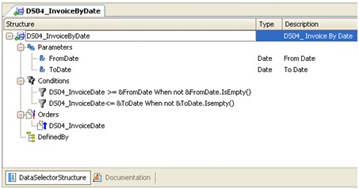

There are two elements to define when editing a Data Selector:
As could be seen in the following image:

Data Selector Structure
The Data Selector Structure contains 4 sections:
1) Parameters
In this section you have to declare the list of parameters received from the Data Selector invocation, in order to use them in Conditions.
Parameters may be variables or attributes (if a parameter is declared as an attribute, it will automatically act as equality filter).
2) Conditions
In this section you have to define the filter conditions to retrieve the desired data.
You can use logical operators: 'and', 'or' and 'not'. If you define conditions in more than one line, all lines will be connected with the 'and' operator.
Conditional constraints are supported using the 'When' clause, which can only refer to variables included in the Parameters section.
3) Orders
Here you can define conditional orders.
To define a compound order, specify all the attributes that make it up in the same line, separated by comma.
Use the 'when' clause, which can only refer to variables included in the Parameters section.
4) Defined By
Here you have to include an attribute or list of attributes that cooperate in the determination of the final base table.
|